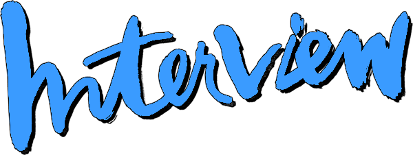

*hover over blue text for context*
WELCOME TO MY COVER LETTER FOR  MAGAZINE
Dear Alexandra and Mel,
I am very excited to be applying to be the Assistant to the Editor in Chief. I believe that I am a great fit for the job and I, of course, love Interview Magazine! I am a recent graduate from Parsons School of Design, where I majored in Communication Design and minored in Fine Arts.
During my time at Parsons, my favorite classes that I took were Editorial Design, Artist Books, Experiments in 16mm Film, Personal Documentary, and Pop: Art & Popular Culture. These all helped inform my obsessions with celebrity imagery and American media, which led to me making my own magazine called Superstars Only in 2021. Early in my senior year my friend Violet suggested I read The Philosophy of Andy Warhol. I was, at the time, already drawn to Interview Magazine because of its gorgeous covers. When I found out it was Andy Warhol’s publication, everything clicked. I love the way Interview treats the image of celebrity. It authentically captures the pop culture of today: it’s cinematic, it’s hot, it's cool, it's fresh, it’s real, it’s magical. The perfect recipe for a magazine that you would want to hang on your wall over and over again.
I learned a lot at my past job being a Gallery Associate at Martos Gallery and Shoot the Lobster. There, I helped with reorganizing the art storage, visiting artist studios, managing inventory, fixing the wifi, cleaning the bathroom, fetching iced matcha lattes, picking up Basquiat prints in Queens, selling artwork to collectors at NADA Miami, scheduling meetings, writing emails, designing catalogs, managing calendars, hiring handlers and photographers, coordinating shipping, making doctors appointments—you name it! Every single lunch break I would go to Iconic Magazines to sift through their stacks. Without fail, I would return to work with a new magazine in hand, usually a past issue of Interview. During my time at the gallery, I was quick to take on unexpected roles in order to adapt to our small team’s needs, which taught me how to multitask, stay organized, and think on my feet.
Here is a video clip from when I rushed from my apartment and ran to Washington Square Park after seeing that Mel would be handing out the Winter Issue to “LANA FANS ONLY”. I also took this as an opportunity to ask Mel if I could interview him for the fourth issue of my magazine. I was very shy and he was very kind and said yes. He never answered my email, but then again it was Paris Fashion Week. During this time, I also had a gut feeling that I should quit my job and pursue what I love. Lana’s song Get Free helped me commit to this decision, which then led to this answer:
Now, I am applying to be his assistant, which I think is an even better and cooler way to learn what it takes to run one of the hottest magazines in the country.
To be a part of Interview’s team would be a full circle moment and a dream of mine. I can’t stress how much of an amazing opportunity this would be and how much I love what Interview does. I love magazines, I love art, I love movies, I love pop culture, and I would love this job!
Thank you for taking the time to read this and I hope to hear from you soon.
All the best,
Daniela :)